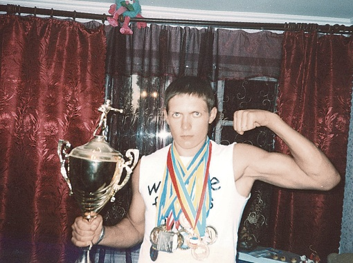
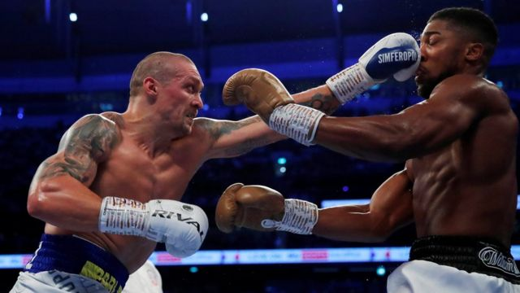
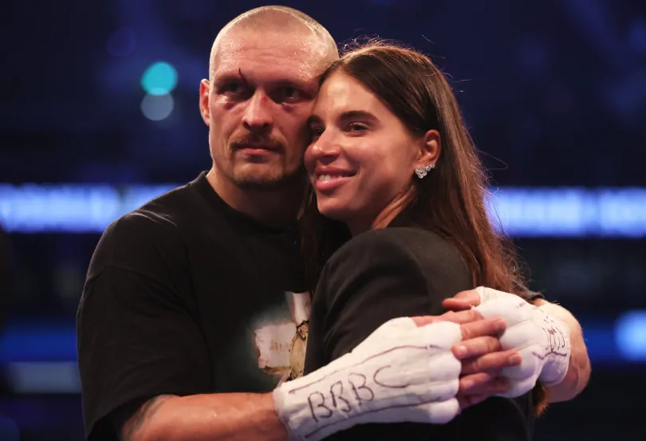
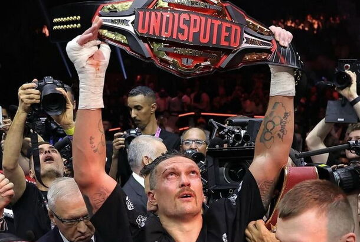

Олександр Усик - український професійний боксер, заслужений майстер спорту України. Має звання абсолютного чемпіона світу в першій важкій вазі (2018-2019 рр.), кращого професійного боксера за версією видавництва The Ring (2022-2023 р). Наразі спортсмен є одним із найвідоміших боксерів у суперважкій вазі. 18 травня став абсолютним чемпіоном світу у суперважкій вазі. Всесвітню популярність Усик здобув 2021 року, коли переміг в поєдинку проти чемпіона у важкій вазі Ентоні Джошуа. До своєї перемоги Олександр прагнув давно. Спортсмену довелося тривалий час набирати м'язову масу, щоб виступити проти досвідченого важковаговика. Результатом поєдинку стала перемога Усика за одноголосним рішенням усіх суддів. За свої старання спортсмен був нагороджений 5 поясами: IBF, WBA (Супер), IBO, WBO, WBC.
Біографія спортсмена
Олександр Олександрович Усик народився 17 січня 1987 року в Сімферополі. Дитина була досить хворобливою, тому лікарі порадили батькам записати маленького Сашка до спортивної секції. У дитинстві Усик займався народними танцями, брав уроки дзюдо, але з найбільшим задоволенням відвідував секцію з футболу. У певний момент майбутній боксер навіть успішно виступав за місцеву юнацьку збірну "Таврія", але в сім'ї не було достатньо грошей, щоб оплачувати подальші заняття та поїздки в різні міста на турніри. Тому від кар'єри футболіста Олександр був змушений відмовитися. Уже будучи підлітком Усик записався до гуртка з боксу. Спочатку тренер відмовлявся брати на заняття хворобливу дитину. Поворотним моментом стало знайомство Олександра з Сергієм Лапіним - професійним тренером, який розгледів у дитині задатки чемпіона. Хоча перше заняття закінчилося для Сашка не дуже успішно, він не опустив руки і продовжив тренування, відточуючи удари по 4 години щодня. удари по 4 години щодня. Праця принесла свої плоди - у 19 років Усик, будучи вже студентом Університету фізичної культури, став золотим медалістом чемпіонату України з боксу, а також здобув бронзу на першості Європи. удари по 4 години щодня.
Історія успіху в боксі
Професійна кар'єра Олександра Усика почалася з роботи в компанії K2 Promotions, що належить братам Кличкам. Тренером перспективного юного боксера став Джеймс Алі Башир, який спеціально переїхав в Україну, щоб навчати Усика. З самого початку кар'єри Олександр відмовлявся виходити на ринг зі слабшими суперниками. У результаті цього він здобув безліч перемог над спортсменами, які вже мали на той момент кілька титулів. До 2016 року в Усика було зафіксовано 9 перемог у 9 зустрічах. Завдяки цим успіхам він отримав можливість виступити проти чемпіона світу у важкій вазі Кшиштофа Гловацького. Олександр впевнено здобув перемогу і став чемпіоном світу вже в десятій сутичці. Надалі Олександр продовжував захищати титул, що не завжди було просто для спортсмена. Йому доводилося постійно набирати і підтримувати вагу для відповідності категорії. У фіналі суперсерії, що складається з безлічі яскравих боїв, тренером Олександра став Анатолій Ломаченко. На спортсмена чекав бій із російським чемпіоном Муратом Гассієвим. Вирішальний поєдинок ускладнюється і політичною ситуацією, адже Усику необхідно було їхати до москви. Але спортсмен впорався із завданням і здобув тріумфальну перемогу. Після цього він отримав звання чемпіона світу в першій важкій вазі та став володарем унікального трофея імені Мохаммеда Алі. Надалі Олександр перейшов у надважку вагу. Виступи спортсмена стали більш рідкісними, а перемоги не завжди простими. Але все змінилося після бою з Ентоні Джошуа. Він став 12 чемпіоном світу, перемогу над яким здобув Олександр Усик під час своєї професійної кар'єри.
Значущі бої
Олександр Усик провів безліч значущих боїв. Серед них:
- Поєдинок із Кшиштофом Гловацьким. Бій проходив у 2016 році в Польщі на батьківщині Гловацького. До цього поєдинку суперник Усика не мав серйозних поразок, тому перемога українця стала подивом для фанатів обох спортсменів. У результаті тріумфу Усик отримав титул чемпіона світу в першій важкій вазі за версією WBO.
- Бій проти Майріса Брієдіса. Наступну знамениту перемогу Олександр здобув 2018 року, виступивши проти титулованого латвійського боксера. Сутичка закінчилася присвоєнням Усику звання чемпіона світу за версією WBC.
- Поєдинок проти Мурата Гассієва. Виступаючи проти росіянина у 2018 році українець здобув впевнену перемогу. За результатами бою Усик отримав безліч титулів, був нагороджений ексклюзивним кубком Мохаммеда Алі та отримав грошовий приз у розмірі 10 мільйонів доларів.
- Бій і реванш з Ентоні Джошуа. Поєдинок з Ентоні 2021 року став третім здійсненим у важкій вазі для українського спортсмена. Олександр проводив його як андердог, але виступив украй успішно, здобувши впевнену перемогу та відібравши в Джошуа всі чемпіонські титули. У 2022 році відбувся реванш, у якому Ентоні безуспішно намагався відновити свої звання. Спроба не увінчалася успіхом, і Усик знову здобув перемогу.
- Чемпіонський поєдинок із Даніелем Дюбуа. Бій відбувся 26 серпня 2023 року в Польщі. Суперником Усика став володар титулу регулярного чемпіона світу Даніель Дюбуа. Сутичка закінчилася перемогою Усика, але результат викликав безліч суперечок. Причиною цього став удар нижче пояса, здійснений Даніелем, після якого українець отримав перепочинок і зміг продовжити бій із новою силою. Проте судді не скасували свого рішення, і на даний момент Усик визнаний переможцем.
Спортивні досягнення
За свою спортивну кар'єру Олександр Усик встиг зробити безліч спортивних досягнень. До найбільш значущих можна віднести такі з них:
- 2008 рік - чемпіон Європи (до 81 кг).
- 2012 рік - звання олімпійського чемпіона (до 91 кг).
- 2012 рік - найкращий спортсмен України.
- 2016 рік - перший рядок у рейтингу найперспективніших боксерів світу за версією британського телеканалу BoxNation.
- 2016 рік - п'ятий рядок у рейтингу найкращих боксерів за версією WBC.
- 2016-2019 рік - чемпіон світу в першій важкій вазі (WBO).
- 2018-2019 рік - чемпіон світу в першій важкій вазі (WBC, The Ring, IBF).
- 2018-2019 рік - суперчемпіон світу в першій важкій вазі (WBA).
- 2018 рік - номінація BBC "Найкращий іноземний спортсмен року".
- 2018 рік - боксер року за версією The Ring, ESPN, Sports illustrated, Yahoo, BoxingTalk.
- 2018 рік - нокаут року (з Тоні Белью) за версією WBC.
- 2019 рік - нагорода найкращому боксеру ESPY.
- 2020 рік - п'ята сходинка в рейтингу найкращих боксерів сучасності за версією журналу The Ring.
- 2021 рік - чемпіон світу у важкій вазі (IBO).
- 2021 рік по теперішній час - чемпіон світу у важкій вазі (WBO, IBF).
- 2021 рік по теперішній час - суперчемпіон світу у важкій вазі (WBA).
- 2022 по теперішній час - чемпіон світу у важкій вазі (The Ring).
- 2024 - Єдині титули WBA, WBO, IBF і WBC. І перейшов у статус «абсолютний».
Нагороди
Крім спортивних титулів і досягнень Усик має також і інші нагороди. Серед них:
- 2011 рік - орден за внесок у розвиток спорту 3-го ступеня.
- 2012 рік - орден за внесок у розвиток спорту 2-го ступеня.
- 2012 рік - звання почесного громадянина міста Сімферополь.
- 2018 рік - орден преподобного Іллі Муромця 1-го ступеня.
- 2022 рік - орден за внесок у розвиток спорту 1-го ступеня.
Сім'я
Олександр Усик є не тільки успішним професійним боксером з безліччю перемог і досягнень, а й зразковим сім'янином. Інформацію про своє особисте життя спортсмен не приховує і охоче ділиться нею з журналістами. Свою майбутню дружину Катерину Хмелевську Олександр зустрів ще під час навчання в школі. Протягом багатьох років молоді люди зустрічалися, а 2009 року уклали офіційний шлюб. На той момент Катерина вже була вагітна первістком.  Загалом у пари народилося троє дітей - дочка Єлизавета (2010 рік), сини Кирило (2013 рік) і Михайло (2015 рік). Ніхто з юних спадкоємців поки не пішов стопами батька. Донька захоплюється танцями, старший син грає у футбол, а молодший зайнявся тенісом. Олександр зізнається, що головна запорука його успіху - вміння правильно розподіляти свій час. Так, більшу частину життя він витрачає на спілкування з сім'єю і спорт, все інше для нього має другорядне значення.
Абсолютний чемпіон
2024 рік став вирішальним для Олександра. 18 травня він бився за титул абсолютного чемпіона світу проти Тайсона Ф'юрі. Бій тривав усі 12 раундів і завершився перемогою Усика за рішенням суддів. Останній подібний бій відбувся 25 років тому, коли Ленокс Льюїс став чемпіоном світу, тож це воістину історичний бій не тільки для українського спортсмена, а й для всього світу.
